spray & akka-http
webinar / Q&A @ 2014-09-30
Mathias Doenitz
/
/
This presentation: http://spray.io/webinar2014/
Survey: How well do you know spray?
- I have a spray app in production,which I'll probably want to upgrade to akka-http.
- I have or have had a spray app in production,probably no upgrade necessary though.
- I've played will spray somewhat,but never deployed it to production.
- I've never really worked with spray,but already written some Akka code.
- So far I've neither worked with spray nor Akka.
akka-http origin: spray.io
- Embeddable HTTP stack
entirely built on Akka actors - Focus: HTTP integration layers
rather than web applications - Server- and client-side
- Fully integrated into Typesafe stack
(threadpools, config, debugging, etc.)
spray features
- Immutable, case-class-based HTTP model
- Fast, lightweight HTTP client and server
- Powerful DSL for server-side API definition
- Fully async & non-blocking,
actor-friendly, modular, testable - Scala & actors "all the way through"
spray weaknesses
- Handling of chunked requests is clunky, incomplete
- Dealing with large message entities can be difficult
- High-level routing DSL sometimes unintuitive, some mistakes not caught at compile-time
- Deep implicit structures, sometimes hard to debug
- Missing features (e.g. websocket support)
akka-http is spray 2.0
- Across-the-board polishing,addressing of weaknesses
- Java APIs
- Simplified module structure
- Core improvement:
Now based on Reactive Streams
Survey: "Reactive Streams"
- I understand the problem they solve andknow how they work (in principle).
- I kind of have an idea of what"Reactive Streams" are all about.
- I've heard about "Reactive Streams" butcouldn't really explain them.
- Never heard of "Reactive Streams" so far.
Reactive Streams: Motivation
Reactive Streams: Motivation
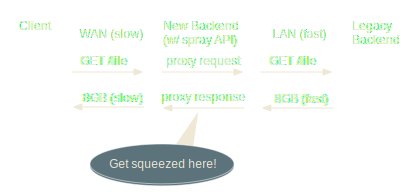Reactive Streams: Motivation
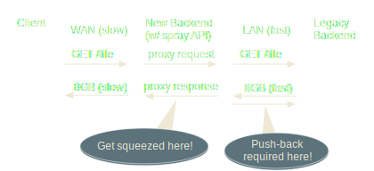Reactive Streams: Motivation (2)
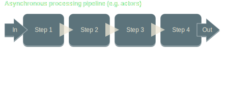Reactive Streams: Motivation (2)
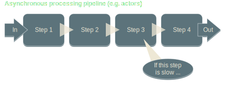Reactive Streams: Motivation (2)
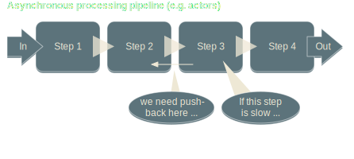Reactive Streams: Motivation (2)
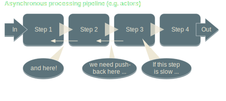Reactive Streams: Motivation (2)
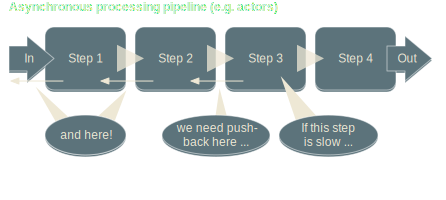Reactive Streams: Motivation (2)
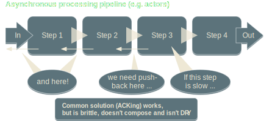Async Boundary
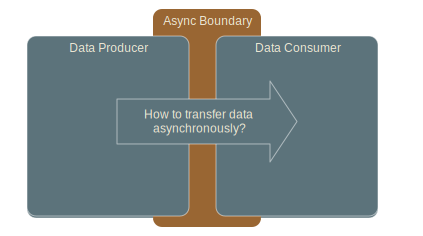Async Boundary
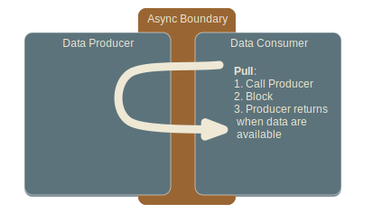Async Boundary
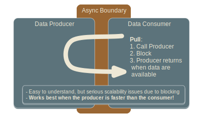Async Boundary
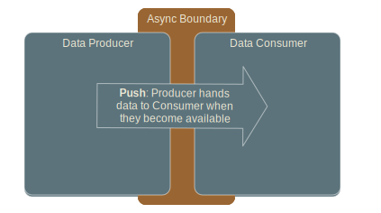Async Boundary
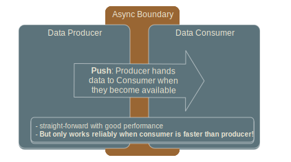Async Boundary
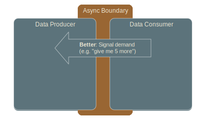Async Boundary
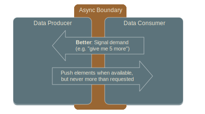Async Boundary
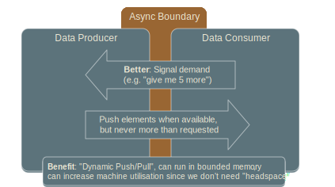Pipeline Processing Done Right
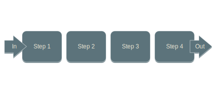Pipeline Processing Done Right
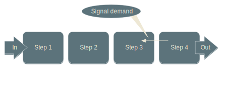Pipeline Processing Done Right
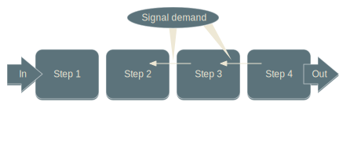Pipeline Processing Done Right
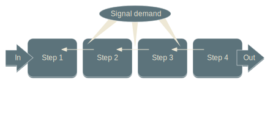Pipeline Processing Done Right
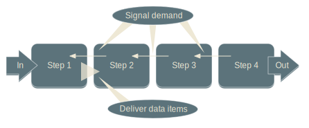Pipeline Processing Done Right
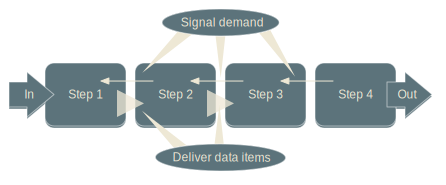Pipeline Processing Done Right
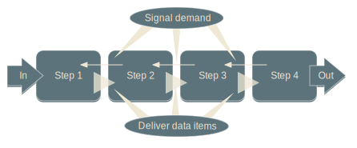Pipeline Processing Done Right
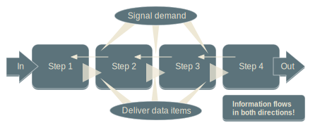Continuous Pipelines across Machines

Reactive Streams
- Pipelined processing "done right"
- Focus: define passing of data
across an async boundary - Implementations provide DSLs for
composable stream transformations - Many use cases
- Joint effort of Netflix, Twitter,
Red Hat, Pivotal and Typesafe
Streams in akka-http
- Requests on one HTTP connection
- Responses on one HTTP connection
- Chunks of a chunked message
- Bytes of a message entity
HTTP Stream Interfaces

HTTP Server API
case class Bind(
connectionSink: Sink[IncomingTcpConnection],
localAddress: InetSocketAddress, ...)
case class IncomingConnection(
remoteAddress: InetSocketAddress,
requestSource: Source[HttpRequest],
responseSink: Sink[HttpResponse])
Simple HTTP Server
val handler =
ForeachSink[IncomingTcpConnection] { conn =>
conn.requestSource.map {
case HttpRequest(GET, Uri.Path("/ping"), _, _, _) ⇒
HttpResponse(entity = "PONG!")
case _ ⇒ HttpResponse(404, entity = "Unknown resource!")
}.produceTo(connection.responseSink).run()
}
IO(Http) ! Http.Bind(handler, "localhost", 8080)
Basic HTTP Client API
case class Connect(
remoteAddress: InetSocketAddress, ...)
case class OutgoingConnection(
remoteAddress: InetSocketAddress,
localAddress: InetSocketAddress,
processor: HttpClientFlow[Any])
trait HttpClientFlow[T]
extends Flow[(HttpRequest, T), (HttpResponse, T)]
HTTP Request
case class HttpRequest(
method: HttpMethod = HttpMethods.GET,
uri: Uri = Uri./,
headers: immutable.Seq[HttpHeader] = Nil,
entity: RequestEntity = HttpEntity.Empty,
protocol: HttpProtocol = HttpProtocols.`HTTP/1.1`
) extends HttpMessage
HTTP Response
case class HttpResponse(
status: StatusCode = StatusCodes.OK,
headers: immutable.Seq[HttpHeader] = Nil,
entity: ResponseEntity = HttpEntity.Empty,
protocol: HttpProtocol = HttpProtocols.`HTTP/1.1`
) extends HttpMessage
HTTP Entity in spray
sealed trait HttpEntity
object HttpEntity {
case object Empty extends HttpEntity
case class NonEmpty(contentType: ContentType,
data: HttpData.NonEmpty) extends HttpEntity
}
sealed trait HttpData
object HttpData {
case object Empty extends HttpData
sealed trait NonEmpty extends HttpData
sealed trait SimpleNonEmpty extends NonEmpty
case class Bytes(bytes: ByteString) extends SimpleNonEmpty
case class FileBytes(fileName: String, ...) extends SimpleNonEmpty
case class Compound(head: SimpleNonEmpty, tail: NonEmpty) extends NonEmpty
}
HTTP Entity in Akka (1/2)
sealed trait HttpEntity
sealed trait ResponseEntity extends HttpEntity
sealed trait RequestEntity extends ResponseEntity
// can be used for any message (request or response)
type MessageEntity = RequestEntity
sealed trait BodyPartEntity extends HttpEntity
// can be used for messages as well as bodyparts
sealed trait UniversalEntity extends HttpEntity
HTTP Entity in Akka (2/2)
object HttpEntity {
case class Strict(contentType: ContentType,
data: ByteString) extends UniversalEntity
case class Default(contentType: ContentType, contentLength: Long,
data: Source[ByteString]) extends UniversalEntity
case class Chunked(contentType: ContentType,
chunks: Source[ChunkStreamPart]) extends MessageEntity
case class CloseDelimited(contentType: ContentType,
data: Source[ByteString]) extends ResponseEntity
case class IndefiniteLength(contentType: ContentType,
data: Source[ByteString]) extends BodyPartEntity
}
Benefits over spray design
- Properly typed model for requests, responses and nested entities
- Entities can have arbitrary size
- Chunks now on an inner level,below the messages
- Can now receive message headersbefore the entity
akka-http Module Structure
akka-http-core - HTTP Model (
spray-http ) - Low-level stack (
spray-can )
- HTTP Model (
akka-http - (Un)marshalling, (De)compression (
spray-httpx ) - Routing DSLs (
spray-routing )
- (Un)marshalling, (De)compression (
akka-http-testkit (spray-testkit )- No more
spray-servlet (for now)
akka-http Roadmap
- Agree and specify
Reactive Streams API - Finish initial release of new akka modules
- akka-stream
- akka-http-core (client- & server-side)
- akka-http (server-side)
- akka-http (client-side)
- Add websockets support (client- & server-side)
- Move Play onto
akka-http (incrementally)
Q & A
Questions
- How will routing work with chunked requests?
- Can I set `chunkless-streaming` per request?
- If I adopt
spray now, how hard will the uprade be? - Support for Swagger, ApiGee, etc.?
- Support for HATEOAS and reverse routing?
- Support for JSON? spray-json? Other libs?
- Akka HTTP vs. Play? What to choose when?
- Websockets and Play Iteratees: What's coming?